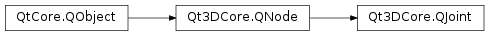

Qt3DCore.QJoint¶
Note
This class was introduced in Qt 5.10.
Synopsis¶
Functions¶
- def
addChildJoint(joint) - def
childJoints() - def
inverseBindMatrix() - def
name() - def
removeChildJoint(joint) - def
rotation() - def
rotationX() - def
rotationY() - def
rotationZ() - def
scale() - def
translation()
Slots¶
- def
setInverseBindMatrix(inverseBindMatrix) - def
setName(name) - def
setRotation(rotation) - def
setRotationX(rotationX) - def
setRotationY(rotationY) - def
setRotationZ(rotationZ) - def
setScale(scale) - def
setToIdentity() - def
setTranslation(translation)
Signals¶
- def
inverseBindMatrixChanged(inverseBindMatrix) - def
nameChanged(name) - def
rotationChanged(rotation) - def
rotationXChanged(rotationX) - def
rotationYChanged(rotationY) - def
rotationZChanged(rotationZ) - def
scaleChanged(scale) - def
translationChanged(translation)
Detailed Description¶
Used to transforms parts of skinned meshes
The
QJointnode is used to build skeletons as part of the skinned mesh support in Qt 3D. A joint can be transformed by way of its scale, rotation and translation properties. Any mesh vertices that are bound to the joint will have their transformations updated accordingly.
-
class
PySide2.Qt3DCore.Qt3DCore.QJoint([parent=nullptr])¶ Parameters: parent – PySide2.Qt3DCore.Qt3DCore::QNodeConstructs a new
QJointwithparent.
-
PySide2.Qt3DCore.Qt3DCore.QJoint.addChildJoint(joint)¶ Parameters: joint – PySide2.Qt3DCore.Qt3DCore::QJointAdds
jointas a child of this joint. Ifjointhas no parent, then this joint takes ownership of it. Child joints are in the coordinate system of their parent joint.
-
PySide2.Qt3DCore.Qt3DCore.QJoint.childJoints()¶ Return type: The vector of joints this joint has as children.
-
PySide2.Qt3DCore.Qt3DCore.QJoint.inverseBindMatrix()¶ Return type: PySide2.QtGui.QMatrix4x4See also
PySide2.Qt3DCore.Qt3DCore::QJoint.setInverseBindMatrix()
-
PySide2.Qt3DCore.Qt3DCore.QJoint.inverseBindMatrixChanged(inverseBindMatrix)¶ Parameters: inverseBindMatrix – PySide2.QtGui.QMatrix4x4
-
PySide2.Qt3DCore.Qt3DCore.QJoint.name()¶ Return type: unicode See also
PySide2.Qt3DCore.Qt3DCore::QJoint.setName()
-
PySide2.Qt3DCore.Qt3DCore.QJoint.nameChanged(name)¶ Parameters: name – unicode
-
PySide2.Qt3DCore.Qt3DCore.QJoint.removeChildJoint(joint)¶ Parameters: joint – PySide2.Qt3DCore.Qt3DCore::QJointRemoves
jointfrom this joint’s list of children. The child joint is not destroyed.
-
PySide2.Qt3DCore.Qt3DCore.QJoint.rotation()¶ Return type: PySide2.QtGui.QQuaternionSee also
PySide2.Qt3DCore.Qt3DCore::QJoint.setRotation()
-
PySide2.Qt3DCore.Qt3DCore.QJoint.rotationChanged(rotation)¶ Parameters: rotation – PySide2.QtGui.QQuaternion
-
PySide2.Qt3DCore.Qt3DCore.QJoint.rotationX()¶ Return type: PySide2.QtCore.floatSee also
PySide2.Qt3DCore.Qt3DCore::QJoint.setRotationX()
-
PySide2.Qt3DCore.Qt3DCore.QJoint.rotationXChanged(rotationX)¶ Parameters: rotationX – PySide2.QtCore.float
-
PySide2.Qt3DCore.Qt3DCore.QJoint.rotationY()¶ Return type: PySide2.QtCore.floatSee also
PySide2.Qt3DCore.Qt3DCore::QJoint.setRotationY()
-
PySide2.Qt3DCore.Qt3DCore.QJoint.rotationYChanged(rotationY)¶ Parameters: rotationY – PySide2.QtCore.float
-
PySide2.Qt3DCore.Qt3DCore.QJoint.rotationZ()¶ Return type: PySide2.QtCore.floatSee also
PySide2.Qt3DCore.Qt3DCore::QJoint.setRotationZ()
-
PySide2.Qt3DCore.Qt3DCore.QJoint.rotationZChanged(rotationZ)¶ Parameters: rotationZ – PySide2.QtCore.float
-
PySide2.Qt3DCore.Qt3DCore.QJoint.scale()¶ Return type: PySide2.QtGui.QVector3DSee also
PySide2.Qt3DCore.Qt3DCore::QJoint.setScale()
-
PySide2.Qt3DCore.Qt3DCore.QJoint.scaleChanged(scale)¶ Parameters: scale – PySide2.QtGui.QVector3D
-
PySide2.Qt3DCore.Qt3DCore.QJoint.setInverseBindMatrix(inverseBindMatrix)¶ Parameters: inverseBindMatrix – PySide2.QtGui.QMatrix4x4See also
PySide2.Qt3DCore.Qt3DCore::QJoint.inverseBindMatrix()
-
PySide2.Qt3DCore.Qt3DCore.QJoint.setName(name)¶ Parameters: name – unicode See also
PySide2.Qt3DCore.Qt3DCore::QJoint.name()
-
PySide2.Qt3DCore.Qt3DCore.QJoint.setRotation(rotation)¶ Parameters: rotation – PySide2.QtGui.QQuaternionSee also
PySide2.Qt3DCore.Qt3DCore::QJoint.rotation()
-
PySide2.Qt3DCore.Qt3DCore.QJoint.setRotationX(rotationX)¶ Parameters: rotationX – PySide2.QtCore.floatSee also
PySide2.Qt3DCore.Qt3DCore::QJoint.rotationX()
-
PySide2.Qt3DCore.Qt3DCore.QJoint.setRotationY(rotationY)¶ Parameters: rotationY – PySide2.QtCore.floatSee also
PySide2.Qt3DCore.Qt3DCore::QJoint.rotationY()
-
PySide2.Qt3DCore.Qt3DCore.QJoint.setRotationZ(rotationZ)¶ Parameters: rotationZ – PySide2.QtCore.floatSee also
PySide2.Qt3DCore.Qt3DCore::QJoint.rotationZ()
-
PySide2.Qt3DCore.Qt3DCore.QJoint.setScale(scale)¶ Parameters: scale – PySide2.QtGui.QVector3DSee also
PySide2.Qt3DCore.Qt3DCore::QJoint.scale()
-
PySide2.Qt3DCore.Qt3DCore.QJoint.setToIdentity()¶
-
PySide2.Qt3DCore.Qt3DCore.QJoint.setTranslation(translation)¶ Parameters: translation – PySide2.QtGui.QVector3DSee also
PySide2.Qt3DCore.Qt3DCore::QJoint.translation()
-
PySide2.Qt3DCore.Qt3DCore.QJoint.translation()¶ Return type: PySide2.QtGui.QVector3DSee also
PySide2.Qt3DCore.Qt3DCore::QJoint.setTranslation()
-
PySide2.Qt3DCore.Qt3DCore.QJoint.translationChanged(translation)¶ Parameters: translation – PySide2.QtGui.QVector3D
© 2018 The Qt Company Ltd. Documentation contributions included herein are the copyrights of their respective owners. The documentation provided herein is licensed under the terms of the GNU Free Documentation License version 1.3 as published by the Free Software Foundation. Qt and respective logos are trademarks of The Qt Company Ltd. in Finland and/or other countries worldwide. All other trademarks are property of their respective owners.